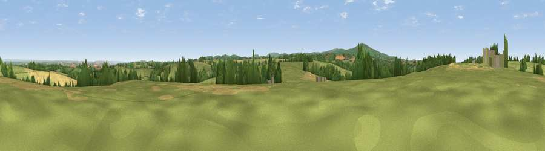

Viewpoint near Spreyton
#18748 in England · top 30% of its area beats it · near SpreytonThe view, rendered

A 360° render of this exact spot computed from the terrain model, tree cover and land cover — summer colours, afternoon light, calibrated against photographs of famous viewpoints. Real trees, hedges and buildings will differ in detail.
The panorama
Grey silhouette: terrain skyline in each direction (720 bearings, Earth curvature and refraction included). Dashed green: skyline with trees (+15 m) and buildings (+8 m) as obstacles. Blue strip: how far the ground is visible on each bearing.
Where the view opens
Wedge length = distance to the farthest visible ground on that bearing (vegetation-aware). Rings at 10, 25 and 50 km.
What fills the view
71% grassland · 14% woodland · 14% cropland
Angular shares of the visible panorama (visual magnitude), not map area. Landscape diversity 0.36 (0–1 Shannon).
Key numbers
More beautiful places nearby
The staircase of upgrades: each row has a higher view potential than everything closer. Driving times are estimates from straight-line distance, calibrated against real road routing — check an actual route before setting out.
| Place | Direction | Drive | Score |
|---|---|---|---|
| Viewpoint near Spreyton | N · 1 km | ~3 min | 55.0 |
| Viewpoint near Spreyton | WNW · 4 km | ~9 min | 55.9 |
| Viewpoint near Whiddon Down | SW · 4 km | ~9 min | 67.0 |
| Viewpoint near Whiddon Down | SW · 4 km | ~10 min | 67.5 |
| Viewpoint near Drewsteignton | S · 5 km | ~11 min | 68.0 |
| Viewpoint near Drewsteignton | SSE · 6 km | ~12 min | 68.7 |
| Viewpoint near Drewsteignton | SSE · 7 km | ~14 min | 69.0 |
| Viewpoint near Drewsteignton | SSE · 7 km | ~15 min | 74.4 |
50.74712, -3.83517 · source: screening · position refined by local search. Computed location — check access rights before visiting.